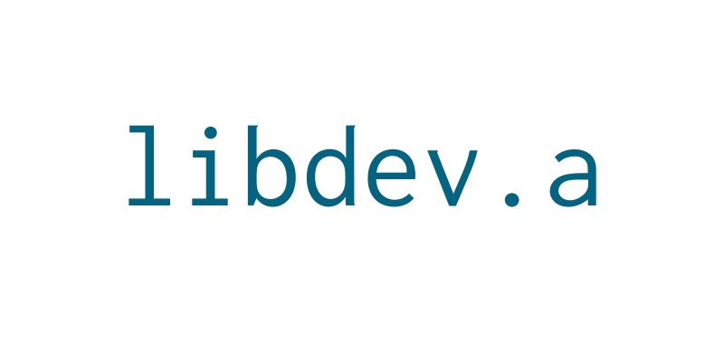

A small developer library with some helpers in it
Linked Lists • Types Definitions • Singletons • Print Helpers • Assertions • Unit Tests
Usage & Installation
Clone the repository
git clone https://github.com/Ne02ptzero/libdev.a
Compile
make
Use
You'll need to include the header file in your project's code
#include <libdev.h>Compilation
gcc myfile.c -L library_directory -ldev
HELPERS
Linked Lists
In libdev, all the linked lists are from the same struct
typedef struct s_list {
void *member; // Actual member
size_t size; // Size of the member
struct s_list *next; // Next in list
struct s_list *prev; // Prev in list
struct s_list *head; // Head of the list
} t_list;
In all my examples, I will use the following struct as an example. But you're free to use any type of data you want to. void * Magic !
typedef struct s_example {
int a;
char b;
} t_example;Here's how to use it:
Add a member
Define
list_add(t_list *main_list, void *new_member, size_t size_of_the_new_member); // MACRO
Example
t_example member;
t_list *list = NULL; // Important, on the first creation the list pointer _needs_ to be NULL.
member.a = 3;
member.b = 'l';
list_add(list, &member, sizeof(t_example));This code will add the t_example member to a new linked list.
Note there is no list initialization, you just need to set the pointer to NULL the first time you create it.
If the list already exist, the member will be added at the end.
Iteration over a list
Define
list_for_each(t_list *list_head, t_list *tmp, void *member); // MACROExample
Our new struct as already been added in the list, now we want to iterate over it:
t_list *tmp;
t_example *ptr;
list_for_each(list, tmp, ptr) {
printf("%d - %c\n", ptr->a, ptr->b);
}list is the head of the list pointer, tmp is just a t_list pointer (used to iterate without changing the head pointer), and ptr is your custom pointer. In this example, it's a t_example *, but you can do it with anything.
Reverse Iteration
Define
list_for_each_rev(t_list *list_head, t_list *tmp, void *member); // MACROExample
Working the same way as list_for_each, but instead of beginning at the list head, and follow the members by next, it's beginning from the tail and follow the members by prev
Add After
Define
list_add_after(t_list *list_head, t_list *list_entry, void *member, size_t size_of_the_member); // MACROExample
Working the same way as list_add, but instead of adding the new member at the end, it's adding the new member after the list_entry member.
Add Before
Define
list_add_before(t_list *list_head, t_list *list_entry, void *member, size_t size_of_the_member); // MACROExample
Working the same way as list_add, but instead of adding the new member at the end, it's adding the new member before the list_entry member.
Useful functions
size_t list_size(t_list *list); // FunctionGet the list size.
list_tail(t_list *head_list); // MACROReturn the last t_list * entry in head_list.
void *list_get(t_list *list_head, void *ptr, size_t size);Search into the list_head linked list, compare each member to ptr with memcmp. Return the member if found, NULL if not. size is for memory comparation.
Type definitions
Types helpers in order to achieve easy bits / data manipulation
| Real Type | Name | Size (bits) | Size (Bytes) | Range |
|---|---|---|---|---|
| signed char | s8_t | 8 | 1 | -128 to 127 |
| unsigned char | u8_t | 8 | 1 | 0 to 255 |
| signed short | s16_t | 16 | 2 | -32,768 to 32,767 |
| unsigned short | u16_t | 16 | 2 | 0 to 65,535 |
| signed int | s32_t | 32 | 4 | -2,147,483,648 to 2,147,483,647 |
| unsigned int | u32_t | 32 | 4 | 0 to 4,294,967,295 |
| signed long long | s64_t | 64 | 8 | -9,223,372,036,854,775,807 to 9,223,372,036,854,775,807 |
| unsigned long long | u64_t | 64 | 8 | 0 to 18,446,744,073,709,551,615 |
Singletons
Definition
void *singleton_lists(u8_t list_type, void *ptr);Example
Singletons are a way to avoid global variables. The way it works is quite simple: You set a variable to a function, this function stores it, and you can retrieve the same variable later. Let's see an example:
enum {
T_LISTS
};
// ...
t_list *list;
// We do some things with this list
singleton_lists(T_LISTS, list);
// Some function, far far away ...
list = singleton_lists(T_LISTS, NULL);In order to set / retrieve the list, you need an unique identifier. In this example, an enum is used, but you can actually use what you want. Some notes though: The id used needs to be unique, and in a range of a unsigned char.
Note: In this example, i use a t_list pointer, but you can pass any data you want to store. void * Magic !
Print Helpers
Info
Definition
void info(char *str, ...);Print an information
Example
info("This information is very important: %s\n", "No, not really");Warning
Definition
void warning(char *str, ...);Print a warning (stderr output)
Example
warning("Something bad happened ! Code: %d\n", 10);Error
Definition
void error(char *str, ...);Print an error (stderr output), print a backtrace then quit with code 1
Example
error("We need to stop for this reason: %s\n", "UNACCEPTABLE CONDITIOOOOONS");As you can see in the examples above, all the print functions use the printf format.
Assertions
An assertion is a simple test on a condition. If the condition is false, the program stop.
Definition
L_ASSERT(condition); // MACROExample
char *str;
str = malloc(10);
// Test the malloc
L_ASSERT(str);If the malloc failed, this is what the print look like:
> Assertion (str) failed at main.c:29
> Function: function5
> Backtrace:
> ./a.out(print_trace+0x19) [0x400cac]
> ./a.out(function5+0x6b) [0x400c81]
> ./a.out(function4+0xe) [0x400c14]
> ./a.out(function3+0xe) [0x400c04]
> ./a.out(function2+0xe) [0x400bf4]
> ./a.out(function1+0xe) [0x400be4]
> ./a.out(main+0x9) [0x400c8c]
> /lib/x86_64-linux-gnu/libc.so.6(__libc_start_main+0xf5) [0x7f2694011b45]
> ./a.out() [0x400b09]
Note that if you want the function names in your backtrace, you must compile your code with the -rdynamic flag.
Unit Tests
Declare a test
Definition
TEST(name); // MACROExample
TEST(test_name) {
...
}Do the test
Inside the test, you must use the T_ASSERT macro. Here's a simple example
TEST(test_name) {
int i = 1;
T_ASSERT(i == 1, "Bad initialization");
return TEST_SUCCESS;
}In this example, we are testing than i is equal to 1. In order to do that, we call T_ASSERT. Same as L_ASSERT, this macro return an error if the condition is wrong. But rather than quitting the program, it just return the error to the test handler. Here's an example output if the test failed:
> Testing test_name ... [ FAILED ]
> Bad initialization: Test: 'i == 1', File main.c:33
As you see, the second parameter of the macro is the error returned if the test failed. The error message max length is 250.
You must finish all of your tests with the TEST_SUCCESS macro, in order to inform the test handler that all went well.
Register a Test
Your test is now declared, but you must register it to the test handler. In libdev.a, all the tests are registered in groups.
Definition
reg_test(group, name); // MACROExample
If you want to register the test_name test, you must write this.
reg_test("Test Group", test_name);Groups are for ... grouped tests.
Launch a Group Test
Now that all our tests are registered, time to launch them !
Definition
t_test_results test_group(char *group); // FUNCTIONExample
Here's how to launch:
test_group("Test Group");This function will run all the tests registered under the name Test Group, in order of insertion.
As you can see, this function return a structure. Here's the content:
typedef struct s_test_results {
size_t success;
size_t failed;
size_t total;
} t_test_results;Just a quick result of the tests. You can completly ignore it if you want to.
Example output:
================================== linked_list ===================================
> Testing list_add_null ... [ OK ]
> Testing list_add_member ... [ OK ]
> Testing list_add_member_head_list ... [ OK ]
> Testing list_add_member_test_multiples ... [ FAILED ]
> Head pointer is not right: Test: '!(ptr->next->head == ptr)', File main.c:48
> Testing list_for_each ... [ OK ]
> Testing list_tail ... [ OK ]
> Testing list_add_after ... [ OK ]
> Testing list_add_before ... [ OK ]
> Testing list_for_each_rev ... [ OK ]
> Testing list_size ... [ OK ]
> Results: Total: 10, Success: 9, Failed: 1. COVERAGE: 90%
Launch all the Tests
Defintion
void test_all(void); // FUNCTIONExample
The usage is pretty straightforward:
test_all();
This will launch all the group test, one by one, then print a result.
Example output:
================================== linked_list ===================================
> Testing list_add_null ... [ OK ]
> Testing list_add_member ... [ OK ]
> Testing list_add_member_head_list ... [ OK ]
> Testing list_add_member_test_multiples ... [ FAILED ]
> Head pointer is not right: Test: '!(ptr->next->head == ptr)', File main.c:48
> Testing list_for_each ... [ OK ]
> Testing list_tail ... [ OK ]
> Testing list_add_after ... [ OK ]
> Testing list_add_before ... [ OK ]
> Testing list_for_each_rev ... [ OK ]
> Testing list_size ... [ OK ]
> Results: Total: 10, Success: 9, Failed: 1. COVERAGE: 90%
===================================== types ======================================
> Testing s8_t ... [ OK ]
> Testing u8_t ... [ OK ]
> Testing s16_t ... [ OK ]
> Testing u16_t ... [ OK ]
> Testing s32_t ... [ OK ]
> Testing u32_t ... [ OK ]
> Testing s64_t ... [ OK ]
> Testing u64_t ... [ OK ]
> Results: Total: 8, Success: 8, Failed: 0. COVERAGE: 100%
=================================== singletons ===================================
> Testing singleton_set ... [ OK ]
> Testing singleton_get ... [ OK ]
> Testing singleton_replace ... [ OK ]
> Results: Total: 3, Success: 3, Failed: 0. COVERAGE: 100%
==================================== RESULTS =====================================
> TESTS SUCCESS: 20
> TESTS FAILED: 1
> TOTAL COVERAGE: 95%